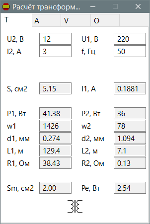

PureBasic
TAVO
Назначение
Расчёт трансформатора, амперметра, вольтметра, омметра.

Взаимосвязанные
TAVOU2, В - напряжение вторичной обмотки I2, А - ток вторичной вычисленный U1, В - напряжение первичной обмотки f, Гц - частота переменного тока P2, Вт - выходная мощность P1, Вт - входная мощность, равная сумме выходной и потери S, см2 - площадь магнитопровода I1, А - ток первичной обмотки w1 - число витков первичной обмотки w2 - число витков вторичной обмотки d1, мм - диаметр провода первичной обмотки d2, мм - диаметр провода вторичной обмотки Sm, см2 - площадь окна магнитопровода чтобы поместились обмотки, зависит от числа витков и диаметра провода. L1, м - длина провода первичной обмотки L2, м - длина провода вторичной обмотки R1, Ом - сопротивление первичной обмотки R2, Ом - сопротивление вторичной обмотки Pe, Вт - электрические потери на активном сопротивлении. Зависят от токов и сопротивлений.Амперметр
Ia, мА - ток прибора, при котором он отклоняется до максимального, указан на приборе. Можно легко измерить задав предполагаемый ток, для этого нужен источник питания и какое нибудь сопротивление рассчитав по формуле R = U/I, если предполагаемое 100 мкА, то при источнике 5В резистор 50 кОм, но чтобы не зашкаливало можно взять 100 кОм и стрелка отклонится в пол-шкалы. Ra, Ом - сопротивление прибора, т.е. подвижной обмотки внутри прибора. Можно измерить цифровым мультиметром на концах прибора. Iп, А - ток который необходимо задать как максимальный. Dш, мм - диаметр медной проволоки, которая будет использована в качеству шунта. Диаметр провода должен выдерживать заданный ток не нагреваясь. Pуд, Ом*мм2/м - удельное сопротивление материала, обычно медь. Rш, Ом - вычисленное сопротивление шунта Sш, мм2 - сечение, площадь Lш, м - вычисленная длина проводника.Как создаётся шунт? После вычисления нужно взять провод указанного диаметра, но чуть длиннее вычисленной длины, пустить по нему заданный ток используя качественный цифровой амперметр. К концам шунта подсоединить провода прибора, один из них можно сразу припаять, а второй двигать по шунту добиваясь идеальной точности отклонения стрелки и запаять в том месте. Провода прибора не соединяют вместе на шунте с токоведущими в одной точке, т.е. провода прибора припаиваются как бы внутри шунта, тогда точность не будет нарушена плохим контактом.
Ia, мА - ток прибора, при котором он отклоняется до максимального, указан на приборе. Ra, Ом - сопротивление прибора, т.е. подвижной обмотки внутри прибора. Можно измерить цифровым мультиметром на концах прибора. Uп, В - напряжение, которое будет максимальное для прибора, когда стрелка отклонится на последнее деление шкалы вправо (не зашкаливая) Rд, кОм - вычисленное дополнительное сопротивление.Омметр Схема была создана на основе изучения популярной в 90-х годах китайской цешки.